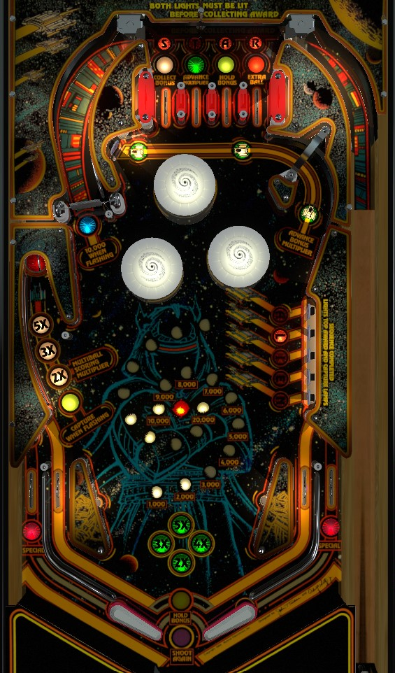

From the left flipper, shoot the A-L-I-E-N targets. Completing them lights multiball. From the right flipper, shoot the spinner, especially if the ball just went through the right in lane, since that increases the spinner value from 1,000 to 10,000 per spin for a brief time. The spinner also changes the playfield multiplier during multiball; try not to start multiball unless 5x playfield is lit. In multiball, hit the spinner when flashing for up to 50,000 per spin.
The below image of Alien Star's playfield was taken from the VPX recreation by BorgDog.
Go through a top lane to light a letter in Star. Lit letters in S-T-A-R cannot be moved with lane change. Finishing S-T-A-R on its own does not do anything, but coupling it with an A-L-I-E-N completion lights a special on the out lanes and makes it possible to collect the awards associated with the top lanes.
From left to right, the top lanes can award Collect Bonus, Advance Bonus X, Hold Bonus, and Extra Ball. These awards can only be received if both the corresponding S-T-A-R letter and the coloured light below the S-T-A-R letter are both already lit. Complete A-L-I-E-N to light the leftmost unlit coloured light. Multiple completions of A-L-I-E-N on the same ball can light multiple coloured lights at once. On some ROMs/settings, pop bumpers will rotate where the coloured lights are located; on others, the coloured lights never move. S-T-A-R letters and coloured lights at the top lanes always completely reset from ball to ball.
The spinner is worth 1,000 points per spin by default, which is decent value on its own compared to the rest of the game, but can be much better than even that.
Going through the right in lane will cause the blue light in front of the spinner to flash for a few seconds, during which time the spinner will be lit for 10,000/spin. The light flashes for a short enough time that the added value can only really be cashed if the spinner is hit on the fly immediately after the in lane is hit. It is possible to shatz/alley pass the right in lane from the left flipper, light the spinner, then immediately shoot the spinner and collect.
Each spin also changes the lit multiplier for multiball between 2x, 3x, and 5x. If multiball capture is lit, shoot the spinner until it lands on 5X so that the multiball reaches max value. The lit multiplier always resets to 2x at the start of each ball.
The spinner value is affected by the multiball playfield X. A flashing spinner during a 5x multiball is worth 50,000 points per spin. Lighting and shooting the spinner should always be top priority during multiball.
The left in lane lights the path to the bonus multiplier for a few seconds. Shooting the right lane above the A-L-I-E-N targets when lit hard enough that the ball goes above the pops and hits the standup target at the end awards one bonus multiplier. This doesn't seem to be able to be fooled easily; the bonus X is not awarded if the ball hits the standup at the end of this path off a bumper, even when lit, so (I assume) the shot only counts if the ball hits the small hanging gate in the bend in this lane on the right followed by the standup at the end with nothing in between.
Max bonus in this game is 5x 29,000 = 145,000 points. Bonus and bonus X do not carry over from ball to ball unless Hold Bonus is lit at the top lanes. Base bonus and bonus multipliers have a quite high difficulty and quite low value compared to playing multiball or lighting and shooting the spinner, so don't prioritize advancing the bonus.
Hit a flashing target in the Alien bank in the middle right to light it solidly. Spell Alien to light the lock, light one top lane to be eligible for awards, and light special on the out lanes if Star has already been completed on that ball. Shooting for these should always be top priority for a ball on the left flipper. Try to get a feel for how deceptively late the shot to the N target is.
If the ball is shot here when Capture is not flashing, it will just score 10,000 points and get spit out immediately. If Capture is flashing, a new ball will be served into the plunger lane, and the ball in the capture will be released as soon as the second ball hits a switch, starting multiball with whatever multiplier was lit when a ball was locked.
The feed out of this lane is not always friendly. Sometimes, the ball will be fed to the top of the left slingshot where it promptly ricochets into the left out lane or flops into the center drain. Have a side nudge ready in whichever direction encourages the ball to find the in lane or clear the slingshot altogether.
Alien Star has a conventional in/out lane setup. Out lanes score 10,000 points, and are lit alternately for Special by completing Alien and Star at least one each on the same ball. In lanes score 3,000 points; the left in lane lights Advance Bonus Multiplier hook shot in the upper right for a few seconds, and the right in lane flashes the spinner for 10,000 points per spin for a few seconds. Slingshots and in lanes on Alien Star are somewhat taller than on most games, and the in lane switches are located near the top of these tall in lanes, so it takes a really good shatz/alley pass to be able to intentionally hit the right in lane switch and flash the left spinner.
Bonus seems to only be advanced by hitting flashing Alien targets on the right. Bonus multiplier is advanced by either making the second top lane from left when both the T and the green light are lit, or by making a left in lane -> right hook shot combo. Max bonus is 5x 29,000 points. Bonus multiplier never carries from ball to ball. Bonus can be collected mid-ball by making the leftmost top lane when both the S and the white light are lit. Collecting the bonus in any way will reset the base bonus back to 0, though earned bonus multipliers are preserved if the bonus was collected at the top lanes. An exception to this is if Hold Bonus has been lit, by making the third top lane from left when both the A and yellow light are lit; this will prevent the Collect Bonus top lane from resetting the base bonus value, and also means your next ball will start with the base bonus from the previous ball preserved.
In competition/novelty play, Specials score 100,000 points. I would expect extra balls to score the same, but have not confirmed this.